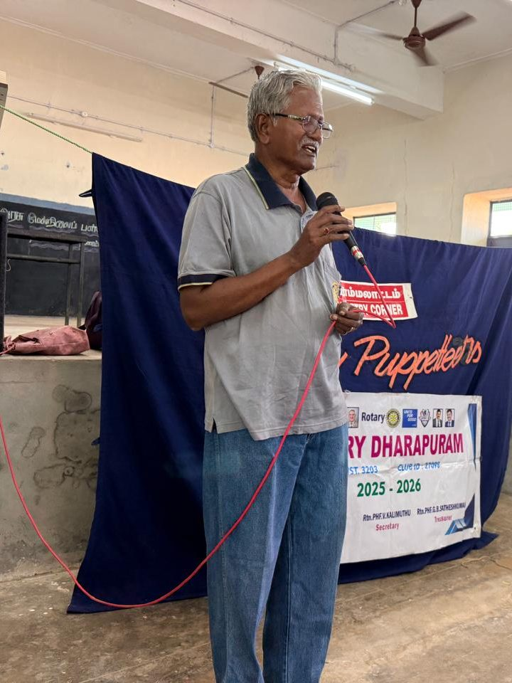

The story
In 1982, a young government school teacher from Periyar District travelled to Delhi for a Centre for Cultural Resources and Training course on puppetry in education. He came home with a conviction that never left him: a puppet can teach what a lecture cannot.
What began as a classroom aid became a life's mission. Evenings after school, holidays, and every year of his retirement — Shri Dhanaraj carried his puppets to villages, schools, colleges and community centres across Tamil Nadu. His shows taught history through Samrat Ashoka, morality through parables, and carried awareness on AIDS, child labour, the environment and women's rights to audiences no textbook could reach.
He worked with the National Service Scheme, Rotary International, church child-care councils, adult education movements and rural development projects — anyone whose message needed to reach people's hearts. He trained hundreds of teachers and child-care workers to make and use puppets themselves, so the art would not end with him.
He never charged for a single performance. In an age when traditional arts survive by commodifying themselves, he chose the opposite path: give the art away, freely, for forty-four years, so that it lives.